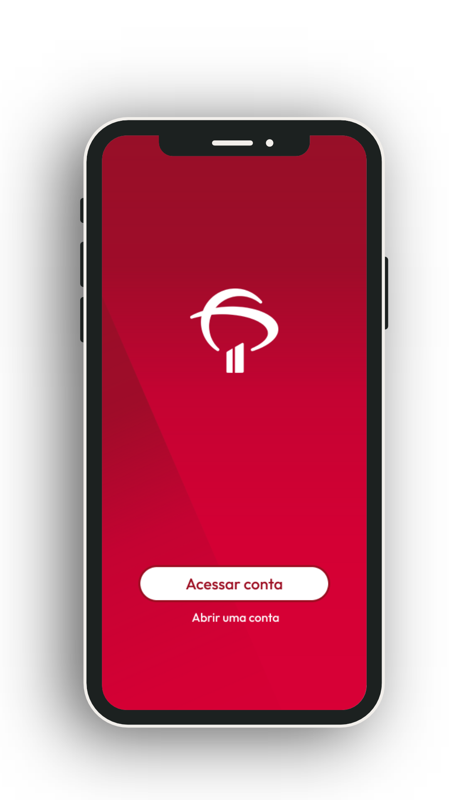

NexBug | Protege+
Quando o assunto é seu dinheiro, um alerta confuso pode custar caro. Segurança precisa ser rápida, clara e acessível.
-
Problema: Golpes via Pix, transferências suspeitas e falta de orientação colocam o dinheiro e a segurança dos clientes em risco.
-
Público-alvo: Clientes do Bradesco, especialmente idosos e pessoas com pouca familiaridade com tecnologias digitais.
-
Prevenção inteligente: Analisamos padrões de comportamento, chaves Pix e dispositivos para identificar atividades suspeitas e emitir alertas antes das transferências.
-
Proteção integrada: Oferecemos autenticação adicional, análise humana e identificação de redes fraudulentas para facilitar bloqueios e a recuração de valores.